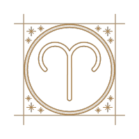
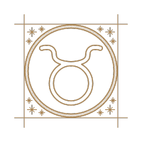
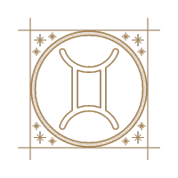
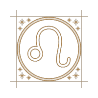
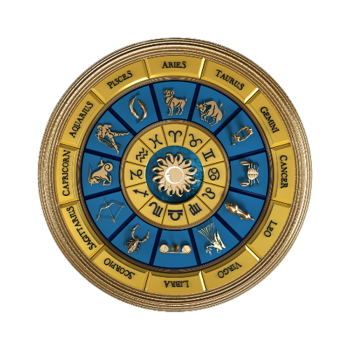
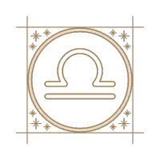
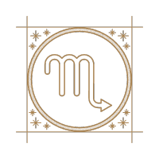
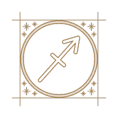
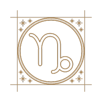
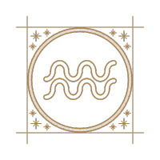
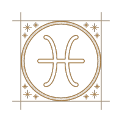
ARIES
Hoy existe cierto riesgo de complicaciones
en tu entorno por causas que se escapan a
en el desánimo, deja que todo fluya y las
cosas volverán a su lugar por simple inercia.
Estas situaciones te preocupan a diario pero no
permitas que te amarguen un día de fiesta.
Si sientes que te ha bajado la energía remédialo alimentándote mejor.
No estás comiendo adecuadamente y esto te perjudica.
En el amor, si has tenido problemas con tu pareja no
necesitas alejarle de tu lado hasta que se resuelva.
Es más efectivo que mejoréis vuestra comunicación de diario.
La distancia no te ayudará para nada.
Y si eres de las Aries que se encuentra sola,
empieza hoy a cerrar la puerta a los fantasmas del pasado
y disfruta de la vida y del amor.
TAURO
Ahora tienes la posibilidad de hacer grandes cambios en tu vida, Tauro, precisamente esos que estás deseando a diario desde hace tiempo.
Será algo muy positivo, afróntalos sin recelos y procurando adaptarte cuanto antes a ellos.
Aprovecha esta etapa de transformación porque podría pasar mucho tiempo antes de que se presente una nueva oportunidad.
Sin embargo, es momento de ir con tranquilidad, no quieras hacerlo todo de golpe y tampoco esperes que los cambios se produzcan en un abrir y cerrar de ojos.
No quieras acelerar hoy el proceso natural de las cosas o se te irá de las manos.
En el amor, Tauro, eres muy afortunada pero recuerda que para mantener a diario la armonía y el bienestar en este punto, a veces hay que tomar decisiones importantes, adquirir mayor compromiso y dar pasos hacia adelante.
GÉMINIS
Si has conseguido ahorrar un dinerito, Géminis, hoy que tendrás tiempo es un día idóneo para pensar qué haces con él para que no pierda valor.
Tenerlo en un cajón no es plan y tampoco dejarlo en la cuenta corriente, porque la tentación es muy fuerte y empezarás a tirar de tus ahorros a diario para comprar cosas innecesarias.
Déjate aconsejar por alguna persona experta e inviértelo en algún producto bancario o en una propiedad.
Es probable que estés en una etapa de tensión con tu pareja, Géminis, y que en gran parte sea debido a la intromisión de terceras personas que a diario comen el tarro a ambos.
Quizá lo hacen con buena intención pero están consiguiendo crear problemas donde no los había. Corta por lo sano o tu relación se podría ir al traste por culpa de todo esto.
CÁNCER
Reflexiona hoy sobre lo que sucede en tu entorno laboral a diario, Cáncer, porque hay algunas personas a quienes les gustaría tener amistad contigo a nivel personal.
Te convendría estrechar lazos con estas personas porque te aportarían mucho. Sería una relación muy fructífera para todos.
En cambio, en este mismo entorno, hay alguien que apenas te soporta, aunque intenta disimularlo.
Se trata de una persona que está dándote consejos a diario y no precisamente acertados.
Por suerte no has seguido ninguno, pero corres riesgo de caer de cuatro patas en la trampa en el momento menos pensado porque lo sigue intentando día tras día, Cáncer.
Hoy tu pareja se merece una sorpresa y qué mejor que una cena íntima a la luz de las velas, aprovechando el puente. Pide su comida exótica favorita y si antes ya le tenías fascinado, ahora te adorará.
LEO
Tienes ahora una visión de futuro súper clara, Leo, aprovecha estos días de fiesta y prepárate para el lunes próximo porque tendrás ocasión de exponer un proyecto o una idea que será muy bien aceptada y que te puede proporcionar grandes beneficios.
Sin embargo, tienes que resolver otros temas que a diario están frenando tu progreso.
Piensas con demasiada frecuencia en algo negativo que te pasó recientemente.
Deberías pasar página y centrarte en lo que tienes ahora a tu alcance.
Puede ser algo relacionado con tu pareja, con tu familia o con el trabajo.
Convéncete de que eso ya pasó y estás en una nueva etapa.
También tiendes ahora a ser demasiado rutinaria y esto impregna tu vida de monotonía, Leo.
Cambia esas rutinas e intenta improvisar a diario, que es muy sano. Hoy puede tener oportunidad de reconciliarte con alguien que te importa mucho. Aprovéchala.
VIRGO
Hoy, Virgo, aún siendo festivo, podrías verte en la tesitura de tomar una decisión importante sobre tu ocupación actual.
Piénsalo a diario antes de inclinarte por cualquier cosa y ten en cuenta la opinión de tu gente más cercana, tu pareja y tu familia, en especial si lo que has de decidir les afecta de algún modo.
En el terreno sentimental, hoy tendrás ocasión de vivir un momento muy importante con la persona que está a tu lado.
Es hora de dar un paso más en la relación y quizá de plantearos compromiso, convivencia o matrimonio.
Lo tenéis todo para ser felices y no tiene sentido esperar más, Virgo. En esto tu chico tiene razón aunque tú le vayas dando largas a diario.
En alguna ocasión, incluso, este tema ha sido motivo de roces entre vosotros. Deja el temor atrás y avanza junto a él.

LIBRA
Hoy, Virgo, aún siendo festivo, podrías verte en la tesitura de tomar una decisión importante sobre tu ocupación actual.
Piénsalo a diario antes de inclinarte por cualquier cosa y ten en cuenta la opinión de tu gente más cercana, tu pareja y tu familia, en especial si lo que has de decidir les afecta de algún modo.
En el terreno sentimental, hoy tendrás ocasión de vivir un momento muy importante con la persona que está a tu lado.
Es hora de dar un paso más en la relación y quizá de plantearos compromiso, convivencia o matrimonio.
Lo tenéis todo para ser felices y no tiene sentido esperar más, Virgo.
En esto tu chico tiene razón aunque tú le vayas dando largas a diario. En alguna ocasión, incluso, este tema ha sido motivo de roces entre vosotros. Deja el temor atrás y avanza junto a él.
ESCORPIO
No te desmoralices, Escorpio, si hoy te enteras de que un error que cometiste hace tiempo y que ya diste por solucionado, todavía colea.
Tú lo habías olvidado pero alguien se está encargando de recordarlo a diario a todo tu entorno, así que presta atención a lo que se cuece a tus espaldas.
Necesitas cambiar de actitud o de forma de pensar, ser muy positiva. Busca consejo entre tus personas de confianza o directamente acude a un profesional para que te ayude.
Hoy es un buen día para el amor, no te dejes vencer por el pesimismo que te ocasionan a diario otros temas y si tienes pareja disfruta de la relación,
Y si eres un corazón libre, Escorpio, quizá hoy alguien que ni te imaginas empiece a darte señales de que quiere contigo algo mas que una amistad.
SAGITARIO
Si hoy que es festivo recibes una propuesta para una cita, Sagitario, aunque no lo tengas por costumbre no te lo pienses dos veces.
Te conviene mucho recuperar las ganas de divertirte porque llevas demasiado tiempo inmersa sólo en tus obligaciones y apenas tienes tiempo a diario para ti misma y tus necesidades más básicas, y mucho menos para actividades de ocio o para hacer ejercicio.
Incorpora el deporte a tu vida. En el ámbito sentimental, pon un poco de chispa a tu relación hoy mismo.
Sabes cómo hacerlo porque imaginación no te falta, Sagitario, pero te has dejado absorber a diario por la rutina y ahora puede que tengas la sensación de que en lugar de pareja tienes un amigo o un compañero de piso.
Estás a tiempo de arreglarlo, pero date prisa o se t e pasará el arroz.
CAPRICORNIO
Podrías tener pronto la oportunidad de participar en un buen negocio, Capricornio, o de intervenir en un proyecto importante que a diario se está gestando cerca de ti.
Es probable que hoy alguien te hable de ello. Presta atención porque quizá lo tomes como un comentario sin importancia cuando en realidad va mucho más allá, es una propuesta en toda regla.
Pregunta, averigua y cuando tengas los datos necesarios, lánzate. No escatimes energías. Concéntrate en ello y lograrás tus propósitos.
A nivel sentimental, los problemas que tienes con tu pareja, Capricornio, se debe a que uno de los dos quiere correr demasiado.
Si eres tú, echa el freno y no quieras quemar etapas. Si vas pasito a pasito a diario vuestra relación se consolidará.
Y si se trata de tu chico, hazle ver hoy que hay que darle tiempo al tiempo.
ACUARIO
Hoy tu inspiración estará a tope, Acuario, y esto te irá de maravilla de cara a la semana próxima, en especial si el tema al que te dedicas a diario requiere creatividad.
Aprovecha este momento para gestar nuevas ideas, proyéctalas en tu mente y valóralas porque pueden ser geniales. No las dejes ahí aparcadas.
También hoy es un buen día para visitar un museo o una exposición, ir al cine o participar de ciertos actos festivos.
Todo esto te ayudará en tu proceso creativo. Relájate y no tengas prisa para conseguir tus objetivos.
Ahora te conviene ir paso a paso, observando y disfrutando a diario de lo que te rodea y de lo que vas consiguiendo.
Sé paciente también en el amor, Acuario. Vive las etapas de coqueteo y enamoramiento con intensidad e ilusión porque son momentos únicos y pasan volando. Disfrútalos a tope.
PISCIS
Organízate desde hoy mismo, Piscis, antes de que los números de tu cuenta se pongan en rojo.
Traza tus planes para no tener que pasar apuros en ningún momento del mes, como te pasa con frecuencia.
Estamos en una época de muchos gastos y deberías hacer una lista con lo que tienes previsto destinar a diario a cosas como el hogar, aprovechando las ofertas.
Te funcionará si te atienes a tus necesidades y al dinero presupuestado.
Tú misma te quedarás sorprendida de lo mucho que esto puede ayudarte a diario.
Deja también una parte para gastos imprevistos y te ahorrarás más de un susto.
En el terreno sentimental, Piscis, si todavía sigues sola ya va siendo hora de dejar de estarlo. Atenta a las señales que percibirás hoy. Tienes cerca de una persona que te puede gustar mucho.
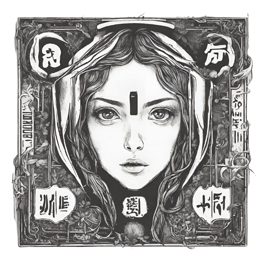